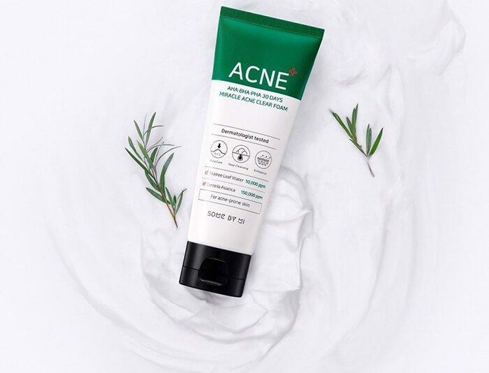

SKINCARE - EFFECTIVE
Sữa rửa mặt trị mụn Some By Mi AHA-BHA-PHA 30 Days Miracle Acne Clear Foam

Vừa qua, Some By Mi đã cho ra mắt sữa rửa mặt trị mụn Some By Mi AHA-BHA-PHA 30 Days Miracle Acne Clear Foam vô cùng chất lượng. Không chỉ có mức giá hợp túi tiền mà sản phẩm còn mang lại hiệu quả thần kỳ cho những làn da mụn. Cùng BlogAnChoi tìm hiểu chi tiết hơn về em này nhé.
Về thương hiệu
Some By Mi là thương hiệu mỹ phẩm bình dân đến từ Hàn Quốc và được rất nhiều cô gái Hàn tin tưởng sử dụng. Sau một thời gian thắng lớn tại thị trường trong nước và một số quốc gia, vào tháng 2/ 2019, Some By Mi đã chính thức có mặt tại thị trường Việt Nam với hệ thống phân phối rộng lớn, cung cấp cho người tiêu dùng Việt số lượng không nhỏ các sản phẩm chính hãng chất lượng..jpg)
Dù chỉ mới chính thức có mặt tại thị trường Việt Nam chưa lâu, nhưng đến nay Some By Mi đã chinh phục được khá nhiều tín đồ yêu làm đẹp bằng những hiệu quả bất ngờ trong từng sản phẩm đúng như cam kết của hãng đã đưa ra. Some By Mi có đa dạng các loại sản phẩm từ chăm sóc da đến trang điểm, tuy nhiên chúng đều có điểm chung là đều được chiết xuất từ các thành phần an toàn, lành tính và được nghiên cứu kỹ lưỡng.
Bao bì, thiết kế của Some By Mi AHA-BHA-PHA 30 Days Miracle Acne Clear Foam
Ấn tượng đầu tiên của mình dành cho bao bì bên ngoài chính là sự quen thuộc. Tone màu xanh lá pha trắng khiến mình liên tưởng dòng sản phẩm trị mụn 30 ngày nổi tiếng của hãng, và dĩ nhiên đây cũng chính là sữa rửa mặt trị mụn được cho ra mắt trong thời gian gần đây. Thiết kế dạng tuýp nhựa có dung tích 100ml, nhìn có vẻ khá to nên mình thấy không thích hợp để mang theo khi đi du lịch hoặc cho vào túi xách nhé.
Thân tuýp kem cũng được in khá đầy đủ về thành phần, công dụng của sản phẩm để mình dễ kiểm tra trước khi apply lên da, do mình sợ kích ứng với các sản phẩm mới nên mình rất thích các sản phẩm có bao bì chi tiết như thế. Phần nắp bật màu đen nhã nhặn, tiện lợi cho những lần sử dụng.
Sữa rửa mât trị mụn Some By Mi AHA-BHA-PHA 30 Days Miracle Acne Clear Foam (ảnh: Intetnet)Em này cũng có đi kèm theo chiếc hộp giấy vuông vức cùng tone màu trắng – xanh của tuýp sữa rửa mặt. Do có hộp giấy đi theo nên sản phẩm được bảo quản kỹ lưỡng tránh trầy xước hoặc hư hao trong lúc vận chuyển. Nếu sản phẩm có hộp giấy đựng bên ngoài thì mình càng thích vì chúng được đầu tư khá chỉnh chu và nhìn cũng rất lịch sự khi trưng bày trên quầy kệ nữa.
Thành phần chính
Sữa rửa mât trị mụn Some By Mi AHA-BHA-PHA 30 Days Miracle Acne Clear Foam Làm sạch da, cải thiện cấu trúc trên bề mặt da, giúp tăng độ đàn hồi và làm mềm mịn da.BHA (Salicylic Acid): Loại bỏ bụi bẩn, dầu thừa và các lớp da chết từ sâu bên trong lỗ chân lông. Từ đó giúp thông thoáng lỗ chân thông thoáng và hạn chế được các tình trạng về mụnPHA (Gluconolactone): Chống viêm, kháng khuẩn, phục hồi da sau các tổn thương, loại bỏ tế bào chết và duy trì độ ẩm trên da.Centella Asiatica Extract (Chiết xuất rau má): Trị mụn, giảm thâm do mụn g ây ra, làm dịu da khỏi những kích ứng và ngăn ngừa quá trình lão hóaTea Tree Extract (Chiết xuất tràm trà): Trị mụn, ngăn ngừa mụn hình thành, chống viêm, kháng khuẩn.Glycerin, Butylene Glycol: Cung cấp độ ẩm cho daAsiaticoside ( Fragrance): Thành phần tạo mùi trong sản phẩmNgoài ra còn có một số thành phần khác: Water, PEG-100 Stearate, Palmitic Acid, Lauryl Betaine, Glyceryl Stearate, Sodium Methyl Cocoyl Taurate, …Công dụng chính của Some By Mi AHA-BHA-PHA 30 Days Miracle Acne Clear Foam
Sữa rửa mât trị mụn Some By Mi AHA-BHA-PHA 30 Days Miracle Acne Clear Foam Làm sạch da khỏi các bụi bẩn bên ngoài môi trườngLoại bỏ các tế bào chết trên bề mặt daCung cấp độ ẩm cho daTrị mụn và ngăn ngừa mụn hình thành trên daPhù hợp cho những làn da mụnCó thể sử dụng hằng ngày.Cách sử dụng Some By Mi AHA-BHA-PHA 30 Days Miracle Acne Clear Foam Cách sử dụng sữa rửa mât trị mụn Some By Mi AHA-BHA-PHA 30 Days Miracle Acne Clear Foam Làm ướt khuôn mặt với nướcLấy lượng sữa rửa mặt vừa đủ (cỡ 1 hạt đậu) ra lòng bàn tayMassage cùng với 1 ít nước cho đến khi chúng tạo bọtMassage chúng lên khắp mặtRửa sạch lại với nước sạch sau đó lau bằng khăn bông mềmSome By Mi AHA-BHA-PHA 30 Days Miracle Acne Clear Foam có tốt không? Mình đã biết đến các sản phẩm chất lượng của Some By Mi từ khá lâu rồi nhưng đến giờ mới có thể trải nghiệm sữa rửa mặt trị mụn Some By Mi AHA-BHA-PHA 30 Days Miracle Acne Clear Foam này. Ấn tượng đầu tiên của mình với em này là chúng giữ ẩm khá tốt trên da luôn đấy, da mịn màng mà không bị quá khô. Đây là điều mà nhiều hãng mỹ phẩm khó có thể làm được bởi đa phần các loại sữa rửa mặt hiện nay đều làm mất cân bằng âm trên da sau khi dùng khiến mình phải thoa ngay 1 lớp toner ngay lập tức sau đó để da không bị khô căng, còn riêng em sữa rửa mặt của Some By Mi thì không hề nhé. Với “nhiệm vụ” cơ bản là làm sạch da em này hoàn toàn làm tốt. Sau khi massage nhẹ nhàng rồi rửa lại với nước, mình cảm nhận được da mình sạch bong luôn đấy, da nhìn rạng rỡ và hồng hào mà mình tin chắc cô gái nào cũng thích.
Sau khi dùng hơn 1 tháng thì mình mới thấy hiệu quả ngăn ngừa mụn trên da đúng như hãng đã quảng cáo. Mụn ẩn của mình ít xuất hiện hơn trước, các loại mụn có nhân cũng nhanh chóng khô lại và không dẫn đến tình trạng viêm. Phải nói nhờ có sữa rửa mặt Some By Mi này mà mình đã ít thấy stress hơn mỗi khi bị mụn “tấn công” nữa. Mụn nhanh chóng biến mất mà không để lại sẹo hay quá nhiều vết thâm trên da nữa, điều này khiến mình khá hài lòng ở khả năng trị mụn của sản phẩm Ưu và nhược điểm của Some By Mi AHA-BHA-PHA 30 Days Miracle Acne Clear Foam
Ưu điểm
Thiết kế bao bì đẹp mắt, dễ dàng nhận biết đây là dòng sản phẩm trị mụnSữa rửa mặt tạo được khá nhiều bọt mà không cần lấy quá nhiều sản phẩmKhả năng trị mụn tốt cho da mà
Nhược điểm
Sản phẩm có mùi do hương liệu nhưng không quá nồng.
Dạng tuýp khá to, khó để mang theo bên mình.
Some By Mi AHA-BHA-PHA 30 Days Miracle Acne Clear Foam có giá khoảng 275000VND/ 100ml
Tổng kết sản phẩm
Công dụng: Làm sạch, trị mụn
Loại da: Da mụnTrọng lượng: 100ml
Dạng kết cấu: Dạng kem tạo bọt
Quốc gia: Hàn Quốc
Quy cách đóng gói: Tuýp